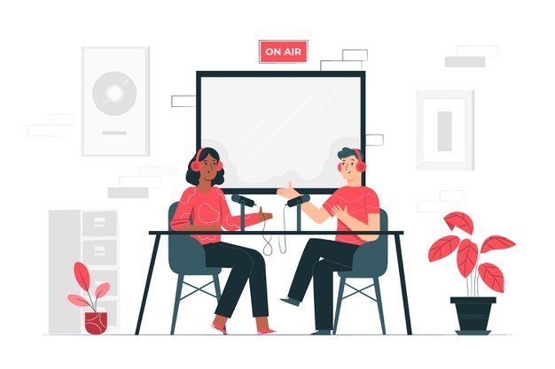

<!-- <ion-header [translucent]="true">
  
</ion-header> -->

<ion-content [fullscreen]="true">
  <ion-toolbar>
    <ion-title style="font-weight: bold; font-size: 19pt;" class="ion-text-center">
      خانه
    </ion-title>
  </ion-toolbar>
  <!-- <ion-header collapse="condense">
    <ion-toolbar>
      <ion-title size="large">خانه</ion-title>
    </ion-toolbar>
  </ion-header> -->
<ion-grid >
  
  <ion-row class="ion-justify-content-center ion-padding-vertical">
    <ion-col size="9">
      <ion-slides  [options]="slideOpts" >
        <ion-slide  style="max-height: 200px; ">
          
          <div class="my_Overlay">پادکست ها</div>
        </ion-slide>
      </ion-slides>
    </ion-col>
</ion-row>

<ion-row class="ion-justify-content-center">
  <ion-col size="9">
    <ion-slides  [options]="slideOpts" >
      <ion-slide  style="max-height: 200px;">
        
        <div class="my_Overlay">بلاگ</div>
      </ion-slide>
    </ion-slides>
  </ion-col>
</ion-row>

<ion-slides [options]="{ slidesPerView: 'auto', zoom: false, grabCursor: true }">
  <ion-slide *ngFor="let post of postNodes | async" style="width: 225px; height: 250px;" class="ion-padding-horizontal">
    <ion-col>
    
        <div class="my_Overlay2">{{post.node.title}}</div>
      </ion-col>
  </ion-slide>
</ion-slides>

<ion-row>

</ion-row>

  
</ion-grid>
  <!-- <app-explore-container name="Tab 3 page"></app-explore-container> -->
</ion-content>

